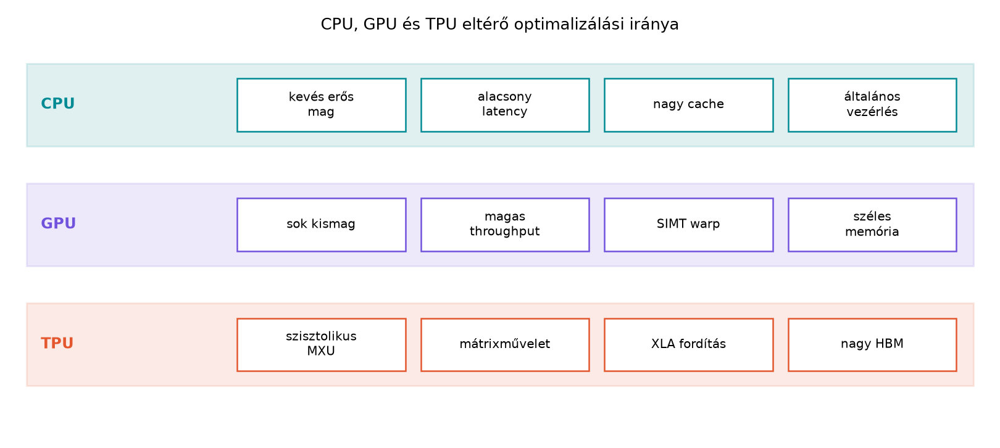

Amikor egy C++ fejlesztő először találkozik a GPGPU-val, a leggyakoribb kognitív csapda az, hogy a GPU-t egyszerűen egy “sokmagos CPU-ként” képzeli el. Ez a megközelítés alapjaiban hibás teljesítménybecslésekhez és rosszul megírt kernelekhez vezet. A CPU és a GPU tervezési filozófiája gyökeresen eltér: míg a CPU-t arra optimalizálták, hogy egyetlen végrehajtási szálat a lehető leggyorsabban futtasson le, addig a GPU-t arra tervezték, hogy több ezer vagy akár több tízezer szálat futtasson egyidejűleg, még akkor is, ha az egyes szálak végrehajtása lassabb.
Ebben az alfejezetben felépítjük azt a mentális modellt, amely megmagyarázza, miért más a GPU-k teljesítménymodellezése. Bevezetjük a késleltetés-orientált (latency-oriented) és az áteresztőképesség-orientált (throughput-oriented) tervezés fogalmát, megvizsgáljuk a memóriahierarchiák közötti különbségeket, majd az Amdahl-törvény segítségével realisztikus korlátot adunk a várható gyorsításra.
A CPU egy latency-oriented (késleltetés-orientált) eszköz. Gondoljunk egy modern, nagy órajelű (3–5 GHz) processzorra. A cél az, hogy egy utasításlánc (thread) a lehető legrövidebb idő alatt fusson le. Ennek érdekében a CPU hatalmas tranzisztor-költségvetést áldoz olyan logikákra, amelyek csökkentik az egyes utasítások közötti várakozási időt:
Ezzel szemben a GPU egy throughput-oriented (áteresztőképesség-orientált) eszköz. A GPU-t alkotó Streaming Multiprocesszorok (SM-ek) alacsonyabb órajelen futnak (~1–2,5 GHz), és hiányoznak belőlük a bonyolult OoO logikák vagy a nagy elágazásbecslő egységek. A GPU tranzisztorköltségvetésének túlnyomó részét aritmetikai logikai egységek (ALU/FP32/FP64/INT32 core-ok) és regiszterfájlok alkotják.
Hogyan birkózik meg a GPU a memória késleltetésével? Tömeges párhuzamossággal. A GPU-n egyszerre több ezer szál van aktív (in-flight). Amikor az egyik warp (32 szálból álló csoport) elakad egy memóriaolvasáson, az ütemező a készenléti warpok közül kiválaszt egy másikat; a várakozó warp állapota (regiszterei) az SM regiszterfájljában marad, ezért a váltás gyakorlatilag nulla költségű (nem kell kiüríteni semmit). Ezt nevezzük latency hiding-nak (késleltetés-elrejtés). A GPU tehát nem az egyes szálak gyorsaságára, hanem a rendszer teljes áteresztőképességére optimalizál.
Szemléltetés: Ha a CPU egy Ferrari, a GPU egy telebusz. A Ferrari (CPU) egyetlen embert (thread) nagyon gyorsan elvisz A-ból B-be, de egyszerre csak nagyon keveset tud szállítani. A busz (GPU) lassabb, de egyszerre 50 embert visz el. Ha 10 000 embert kell eljuttatni, a buszokból álló flotta sokkal rövidebb idő alatt végez, még akkor is, ha egyetlen busz sebessége elmarad a Ferrariétól.
A CPU és a GPU memóriarendszere is tükrözi ezt a filozófiai különbséget.
A CPU memóriarendszerét a hagyományos programozási mintákra (lokális változók, gyakori függvényhívások, pointer-ugrálások) tervezték. A hangsúly az alacsony késleltetésen van. Egy tipikus modern CPU memória-alrendszere:
A GPU memóriarendszere ezzel szemben a maximális sávszélességre van kihegyezve. Egy modern adatközponti GPU esetében:
A lényeg a számok arányában rejlik. Amíg egy CPU DRAM-jának elérési késleltetése nagyon alacsony a GPU-hoz képest, addig a GPU memória-sávszélessége egy nagyságrenddel nagyobb. A GPU-s programok akkor hatékonyak, ha a memória-hozzáféréseket úgy szervezzük, hogy a rendszer mindig a maximális sávszélességen tudjon adatot szolgáltatni (ezt nevezzük coalescing-nak, lásd később, a III. részben).
Ezért a GPU-s teljesítményt szinte soha nem az utasítások számával, hanem a memória-átbocsátóképességgel és a számítási intenzitással (FLOP/byte) mérjük.
Amikor egy C++ kódot GPU-ra portolunk, a tapasztalatlan fejlesztő gyakran lineáris gyorsítást vár (“a GPU-nak 10 000 magja van, tehát 10 000-szer gyorsabb lesz”). Ezt a téveszmét pontosan leírja az Amdahl-törvény.
Ha egy programnak van egy párhuzamosítható része () és egy soros, párhuzamosíthatatlan része (), akkor az elérhető gyorsítás processzormag használata esetén:
Következmények a GPGPU-ra nézve:
A soros rész dominál: Ha a programnak csak 90%-a párhuzamosítható, az elérhető maximális gyorsítás még végtelen számú maggal is: .
A PCIe transzfer mint soros overhead: A CPU és a GPU közötti adatátvitel (a PCI Express buszon keresztül) gyakran a legnagyobb soros szűk keresztmetszet. Ha egy program 100 ms-ig párhuzamosan fut a GPU-n, de 50 ms-ba telik az adatok feltöltése és leolvasása, a hatékonyság drasztikusan csökken, mert a transzfer ideje alatt a GPU “éhezik”, a CPU pedig várakozik.
Kernelindítási költség: A kernel elindítása a driveren keresztül nem nulla idejű művelet (jellemzően 5–20 µs). Ha túl sok apró, rövid kerneleket indítunk, ez a soros overhead felfalja a párhuzamos nyereséget.
Az Amdahl-törvény gyakorlati alkalmazása a heterogén rendszerekben: A mai GPGPU programozás nem arról szól, hogy a CPU-t lecseréljük, hanem hogy heterogén módon használjuk a kettőt. A CPU (Host) felel a soros logikáért, az I/O-ért, a fájlműveletekért és a bonyolult, elágazásokkal teli vezérlésért. A GPU (Device) felel a nagyméretű, homogén adatpárhuzamos régiókért.
Ebben a laborban egy egyszerű, de tanulságos mérést végzünk: a Saxpy
(Single-precision A*X Plus Y) műveletet
méretű tömbön. A művelet: y[i] = a * x[i] + y[i]. Ez a
művelet tökéletesen adatpárhuzamos, így ideális a GPU számára, azonban
megmutatja a memória-sávszélesség korlátait.
Környezet (példa, helyőrző értékekkel): > GPU: NVIDIA GeForce RTX 4070 (12 GB) > Driver: 550.54.14 > CUDA: 12.4 > OS: Ubuntu 22.04 LTS > Fordító: nvcc (g++ 12.3 hoszt-kompilátor) > Megjegyzés: A konkrét mérési értékek az adott hardveren változhatnak; az alábbiak a mérési módszertan bemutatására szolgálnak.
A CPU implementáció (C++17):
// cpu_saxpy.cpp
#include <algorithm>
#include <vector>
#include <chrono>
#include <iostream>
void saxpy_cpu(float a, const std::vector<float>& x, std::vector<float>& y) {
for (size_t i = 0; i < x.size(); ++i) {
y[i] = a * x[i] + y[i];
}
}
int main() {
const size_t N = 64 * 1024 * 1024; // 64M elem
std::vector<float> x(N, 1.0f), y(N, 2.0f);
const float a = 0.5f;
const int warmup = 5, reps = 20;
for (int w = 0; w < warmup; ++w) saxpy_cpu(a, x, y);
std::vector<double> t(reps);
for (int r = 0; r < reps; ++r) {
auto start = std::chrono::steady_clock::now();
saxpy_cpu(a, x, y);
auto end = std::chrono::steady_clock::now();
t[r] = std::chrono::duration<double, std::milli>(end - start).count();
}
std::sort(t.begin(), t.end());
double time_ms = t[reps / 2];
double iqr_ms = t[(3 * reps) / 4] - t[reps / 4];
double bandwidth = (3.0 * N * sizeof(float)) / (time_ms / 1000.0) / 1e9;
std::cout << "CPU median: " << time_ms << " ms, IQR: " << iqr_ms
<< " ms, Effective Bandwidth: " << bandwidth << " GB/s\n";
return 0;
}Build és futtatás (a példák a könyv írásakor nem lettek lefordítva/futtatva; a parancsok a saját környezetre igazítandók):
g++ -O3 -std=c++17 -o cpu_saxpy cpu_saxpy.cpp && ./cpu_saxpy
# sm_89 = RTX 4070; máshol -arch=native
nvcc -O3 -std=c++17 -arch=sm_89 -o gpu_saxpy gpu_saxpy.cu && ./gpu_saxpyA GPU implementáció (CUDA C++):
// gpu_saxpy.cu
#include <cuda_runtime.h>
#include <algorithm>
#include <cstdlib>
#include <iostream>
#include <vector>
// Hibakezelő makró (kötelező elem a könyv laborjaiban)
#define CUDA_CHECK(call) \
do { \
cudaError_t err = (call); \
if (err != cudaSuccess) { \
std::cerr << "CUDA error at " << __FILE__ << ":" << __LINE__ \
<< " -> " << cudaGetErrorString(err) << std::endl; \
std::exit(EXIT_FAILURE); \
} \
} while (0)
__global__ void saxpy_kernel(float a, const float* x, float* y, size_t n) {
// a szorzás 64 bitben történjen, különben 2^32 elem fölött túlcsordul
size_t i = static_cast<size_t>(blockIdx.x) * blockDim.x + threadIdx.x;
if (i < n) {
y[i] = a * x[i] + y[i];
}
}
int main() {
const size_t N = 64 * 1024 * 1024;
const float a = 0.5f;
size_t bytes = N * sizeof(float);
std::vector<float> h_x(N, 1.0f), h_y(N, 2.0f);
float *d_x, *d_y;
CUDA_CHECK(cudaMalloc(&d_x, bytes));
CUDA_CHECK(cudaMalloc(&d_y, bytes));
// Host -> Device másolás (egyetlen mért átvitel, külön eseménypárral)
cudaEvent_t c0, c1, c2;
CUDA_CHECK(cudaEventCreate(&c0));
CUDA_CHECK(cudaEventCreate(&c1));
CUDA_CHECK(cudaEventCreate(&c2));
CUDA_CHECK(cudaEventRecord(c0));
CUDA_CHECK(cudaMemcpy(d_x, h_x.data(), bytes, cudaMemcpyHostToDevice));
CUDA_CHECK(cudaMemcpy(d_y, h_y.data(), bytes, cudaMemcpyHostToDevice));
CUDA_CHECK(cudaEventRecord(c1));
CUDA_CHECK(cudaEventSynchronize(c1));
float t_h2d = 0.0f;
CUDA_CHECK(cudaEventElapsedTime(&t_h2d, c0, c1));
// Launch konfiguráció: 256 szál/blokk, elegendő blokk az N-hez
const int threads = 256;
const unsigned int blocks =
static_cast<unsigned int>((N + threads - 1) / threads);
const int warmup = 5, reps = 20;
// Warm-up
for (int w = 0; w < warmup; ++w) {
saxpy_kernel<<<blocks, threads>>>(a, d_x, d_y, N);
CUDA_CHECK(cudaGetLastError());
}
CUDA_CHECK(cudaDeviceSynchronize());
// Mérés: ismétlésenként külön eseménypár (CUDA events)
cudaEvent_t start, stop;
CUDA_CHECK(cudaEventCreate(&start));
CUDA_CHECK(cudaEventCreate(&stop));
std::vector<float> t(reps);
for (int r = 0; r < reps; ++r) {
CUDA_CHECK(cudaEventRecord(start));
saxpy_kernel<<<blocks, threads>>>(a, d_x, d_y, N);
CUDA_CHECK(cudaGetLastError());
CUDA_CHECK(cudaEventRecord(stop));
CUDA_CHECK(cudaEventSynchronize(stop));
CUDA_CHECK(cudaEventElapsedTime(&t[r], start, stop));
}
std::sort(t.begin(), t.end());
double time_ms = t[reps / 2];
double iqr_ms = t[(3 * reps) / 4] - t[reps / 4];
double bandwidth = (3.0 * N * sizeof(float)) / (time_ms / 1000.0) / 1e9;
std::cout << "GPU kernel median: " << time_ms << " ms, IQR: " << iqr_ms
<< " ms, Effective Bandwidth: " << bandwidth << " GB/s\n";
// Device -> Host (validációhoz; egyetlen mért átvitel)
CUDA_CHECK(cudaEventRecord(c1));
CUDA_CHECK(cudaMemcpy(h_y.data(), d_y, bytes, cudaMemcpyDeviceToHost));
CUDA_CHECK(cudaEventRecord(c2));
CUDA_CHECK(cudaEventSynchronize(c2));
float t_d2h = 0.0f;
CUDA_CHECK(cudaEventElapsedTime(&t_d2h, c1, c2));
std::cout << "H2D: " << t_h2d << " ms, kernel (medián): " << time_ms
<< " ms, D2H: " << t_d2h << " ms, összesen (egy kernellel): "
<< t_h2d + time_ms + t_d2h << " ms\n";
// y kezdetben 2,0; minden futás +0,5-öt ad: elvárt y[i] == 2 + 0,5 * (5 + 20)
const float expected = 2.0f + 0.5f * static_cast<float>(warmup + reps); // 14,5
for (size_t i = 0; i < N; ++i) {
if (h_y[i] != expected) {
std::cerr << "Validation FAILED at i=" << i << ": " << h_y[i] << std::endl;
return EXIT_FAILURE;
}
}
std::cout << "Validation OK\n";
CUDA_CHECK(cudaFree(d_x));
CUDA_CHECK(cudaFree(d_y));
return 0;
}Mérési napló és kiértékelés:
| Implementáció | Idő (ms) | Eff. sávszélesség (GB/s) | Megjegyzés |
|---|---|---|---|
| CPU (1 mag) | várt: kb. 25–60 ms (becslés); mért: <kitöltendő> | várt: kb. 13–32 GB/s (805 MB / idő; a CPU memóriarendszerétől és a vektorizálástól függ; becslés); mért: <kitöltendő> | Egyetlen mag viszonyítási alap, nem teljes értékű CPU-baseline. |
| CPU (többszálú, pl. OpenMP, vektorizált) | mért: <kitöltendő> | mért: <kitöltendő> | A tisztességes baseline; a tanuló méri és tölti ki. |
| GPU (RTX 4070) | várt: ≥ 1,6 ms, reálisan kb. 1,8–2,0 ms (becslés); mért: <kitöltendő> | várt: legfeljebb 504 GB/s, reálisan kb. 400–450 GB/s (becslés); mért: <kitöltendő> | Memóriasávszélesség-korlátos: 3 · 64Mi · 4 B ≈ 805 MB forgalom, a névleges 504 GB/s (192 bites GDDR6X) felső korlát. |
| GPU végponttól végpontig (H2D + kernel + D2H) | várt: ≈ 32–36 ms PCIe 4.0 x16-on (összesen ≈ 805 MB megy át a buszon; becslés, pinned memóriával); mért: <kitöltendő> | — | Egyetlen SAXPY-nál a PCIe-forgalom a kernelidő sokszorosa. |
Várt vs. Mért eredmény: A fenti táblázat a várható értékeket analitikus becslésként adja (805 MB forgalom osztva a sávszélességgel); a mért oszlopokat a tanuló tölti ki, nem futtatott mérés. A mért értékek attól függenek, hogy a hoszt-kód (CPU) mennyire van optimalizálva (pl.
-O3fordítási flag), és hogy a GPU milyen órajelen boost-ol. Atime_msa 20 mért futás mediánja (5 warm-up után), az IQR a szóródást adja; a GPU-programban a H2D és D2H átvitel külön eseménypárral, egyszer mérve szerepel. Egyetlen SAXPY-ra a PCIe-forgalom a kernelidő sokszorosa; a GPU akkor nyer, ha az adat a GPU-n marad több műveleten át. Fontos: Ha a CPU oldalon a fordító vektorizálja a ciklust (AVX2/AVX-512), a CPU teljesítménye jelentősen javulhat, de a GPU-előny mértéke ilyenkor elsősorban a két eszköz memória-sávszélességének arányától függ (egy többmagos CPU tipikusan néhányszor 10 GB/s-tól ~100 GB/s-ig terjedő effektív sávszélességet ér el), ezért a gyorsítást mindig többszálú, optimalizált CPU-baseline-hoz érdemes viszonyítani, az egyetlen magos érték csak alsó viszonyítási pont.
cudaMemcpy 50 ms-ot vett igénybe).cudaMemcpy-k is jelentősen befolyásolják.Ebben az alfejezetben megalapoztuk a GPU gondolkodásmódját. Megértettük, hogy a CPU egy késleltetés-orientált, míg a GPU egy áteresztőképesség-orientált eszköz. Ez a különbség határozza meg a memóriahierarchiát (nagy cache a CPU-n, hatalmas sávszélesség a GPU-n) és az optimalizálás célját. Bevezettük az Amdahl-törvényt, amely megmutatja, hogy a soros részek (mint a PCIe másolás) hogyan korlátozzák a valós gyorsítást.
Önellenőrző kérdés: Egy mérnök a következőt tapasztalja: van egy szimulációs kódja, amely 95%-ban párhuzamosítható. Amikor lefuttatja a GPU-n, óriási gyorsítást lát a tiszta számítási részben (100-szoros a CPU-hoz képest). Azonban amikor a teljes alkalmazást nézi, a GPU-s verzió csak 10-szer gyorsabb összességében. Az Amdahl-törvény és a heterogén memóriamodell alapján indokolja meg, miért állhat elő ez a helyzet, és milyen optimalizálási stratégiát javasolna a teljes alkalmazás gyorsítására? (Válaszában térjen ki a PCIe transzfer és a kernelindítási overhead szerepére!)
Mintamegoldás: Az Amdahl-törvény szerint és mellett az elméleti gyorsítás . A megfigyelt 10-szeres gyorsítás ennél kisebb: az eredeti futásidő 1/10-ed részére, a 0,0595-ös számítási rész fölött további kb. rész (az eredeti idő kb. 4%-a) jelenik meg többletköltségként, tipikusan PCIe-átvitelből, kernelindításból és szinkronizációból. Stratégia: az adatok GPU-n tartása a lépések között, az átvitel és a számítás átfedése streamekkel és pinned memóriával, kisebb kernelek összevonása (fusion, CUDA graph), valamint a maradék 5% soros rész csökkentése.